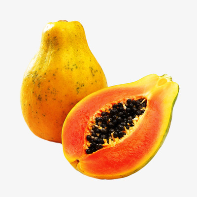

Papaya
papaya, (Carica papaya), also called papaw or pawpaw, succulent fruit of a large plant of the family Caricaceae. Though its origin is rather obscure, the papaya may represent the fusion of two or more species of Carica native to Mexico and Central America. Today it is cultivated throughout the tropical world and into the warmest parts of the subtropics. The papaya fruit is slightly sweet, with an agreeable musky tang, which is more pronounced in some varieties and in some climates than in others. It is a popular breakfast fruit in many countries and is also used in salads, pies, sherbets, juices, and confections. The unripe fruit can be cooked like squash.The unripe fruit contains a milky juice in which is present a protein-digesting enzyme known as papain, which greatly resembles the animal enzyme pepsin in its digestive action.
The papaya plant is considered a tree, though its palmlike trunk, up to 8 metres (26 feet) tall, is not as woody as the designation generally implies. The plant is crowned by deeply lobed leaves, sometimes 60 cm (2 feet) across, borne on hollow petioles (leaf stalks) 60 cm long. Normally, the species is dioecious, male and female flowers being produced on separate plants, but hermaphroditic forms are known, and numerous irregularities in the distribution of the sexes are common. Male flowers are borne in clusters on stalks 90 cm long; the flowers are funnel-shaped, about 2.5 mm (0.1 inch) long, and whitish, with 10 stamens in the throat.